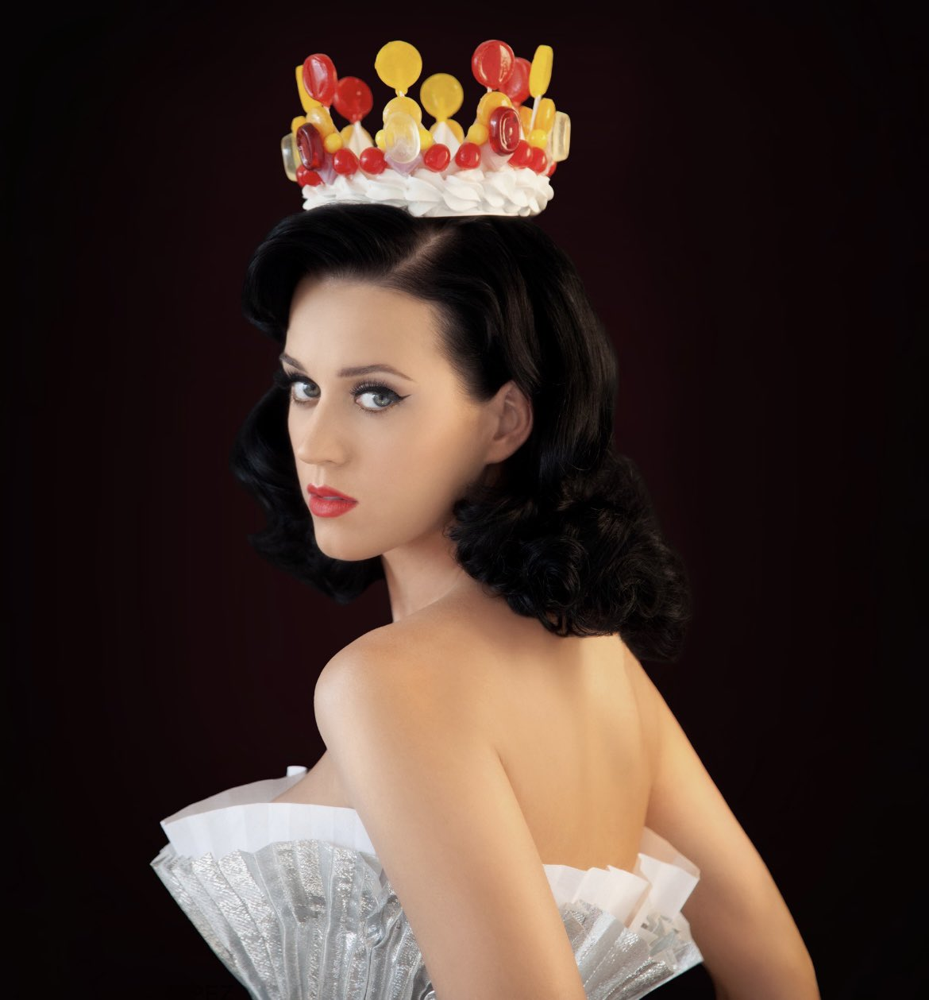
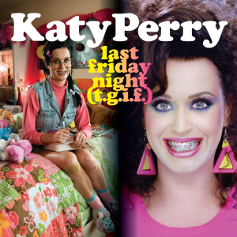
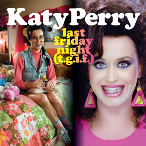
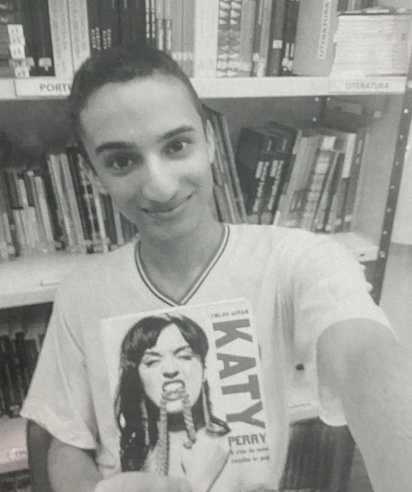
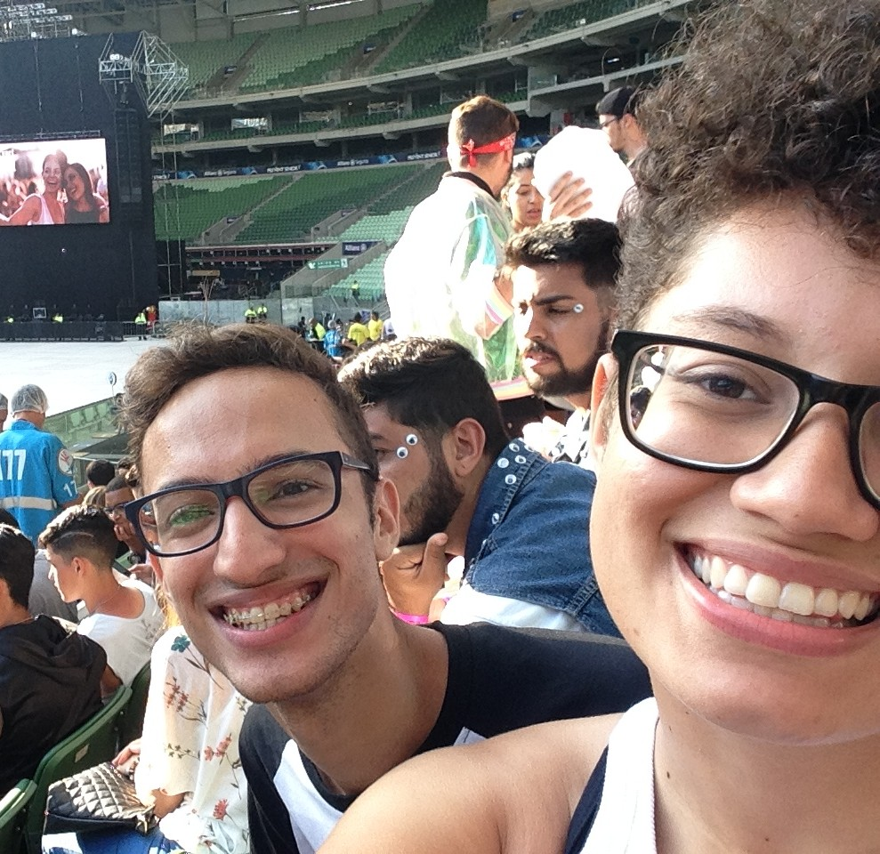
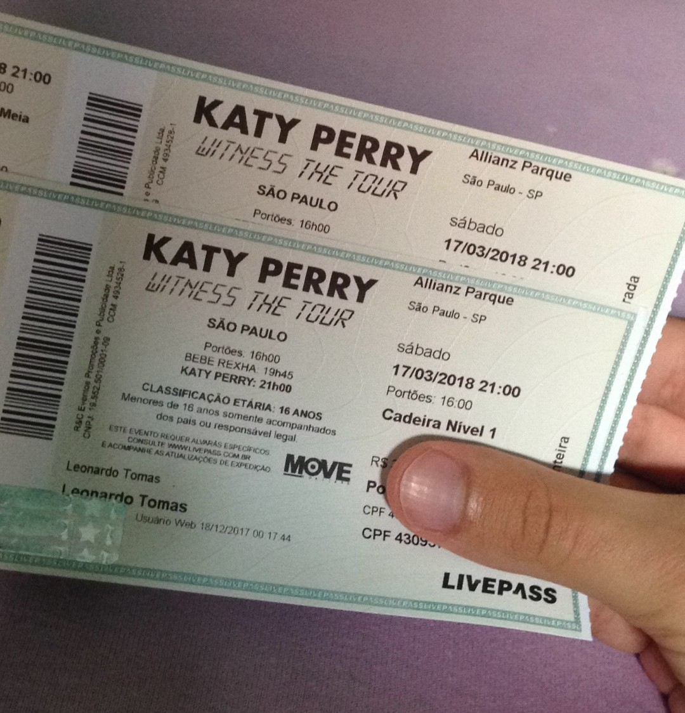

Sobre a Katy Perry
Katy Perry é uma cantora, compositora e empresária norte-americana, conhecida por seu estilo pop vibrante, visuais marcantes e sucessos que dominaram as paradas musicais ao longo dos anos.
O nome verdadeiro dela é Katheryn Elizabeth Hudson, e ela nasceu em 25 de outubro de 1984, em Santa Barbara, Califórnia. Começou cantando música gospel, mas só alcançou fama mundial ao adotar o nome artístico Katy Perry (para não ser confundida com a atriz Kate Hudson) e lançar músicas pop com forte apelo visual e temático.
Katy Perry é conhecida por sua estética colorida, teatral e divertida, misturando humor, sensualidade e fantasia em clipes e apresentações. Ela usa moda como forma de expressão, de vestidos inspirados em doces a figurinos de personagens de desenho animado, ela foi chamada de "Rainha do Camp" pela revista Vogue.
Ela alcançou a fama com o disco One of the Boys (2008), um disco de pop rock contendo seu single de estreia "I Kissed a Girl" e o single seguinte "Hot n Cold". Mas foi com o álbum Teenage Dream (2010) que Katy se consolidou como uma das maiores estrelas pop da década.
Sobre o álbum Teenage Dream
.png)
O álbum Teenage Dream, lançado em 24 de agosto de 2010, de Katy Perry, é um dos discos mais icônicos da música pop dos anos 2010, colorido, nostálgico, romântico e cheio de hits que definiram a era do pop dançante da década.
Gerou cinco singles a alcançar o topo da parada dos Estados Unidos: "California Gurls", "Teenage Dream", "Firework", "E.T." e "Last Friday Night (T.G.I.F.)", tornando-se o único álbum por uma artista feminina a alcançar tal feito. Uma reedição do álbum, intitulado Teenage Dream: The Complete Confection (2012), posteriormente produziu o single "Part of Me", que também alcançou o topo da tabela estadunidense.
O álbum mistura romance, liberdade, juventude e autodescoberta. As letras falam de amor, diversão, coração partido e empoderamento, sempre com um toque cinematográfico e colorido. Katy queria capturar o sentimento de ser jovem e sonhar alto, por isso o título Teenage Dream (“Sonho Adolescente”).
Teenage Dream marcou a era de ouro do pop radiofônico. Suas músicas dominaram festas, rádios e redes sociais, e ajudaram a consolidar Katy Perry como uma das maiores artistas pop da geração. Muitos consideram esse álbum o “auge criativo e comercial” da carreira dela.
Singles


 



Assista as prévias
Prêmios, Records & Certificações
Premiações (2010–2013):
-
Grammy Awards: 6 indicações - 0 vitórias (incluindo Álbum do Ano e Gravação do Ano)
MTV Video Music Awards: 16 indicações – 4 vitórias (incluindo Vídeo do Ano com “Firework”)
Billboard Music Awards: 22 indicações – 3 vitórias
American Music Awards: 9 indicações – 2 vitórias
Recordes e feitos históricos:
Álbum com 6 hits em #1 na Billboard Hot 100
Primeiro álbum da história com múltiplos singles Diamond
“Firework”: música feminina mais certificada nos EUA
447 semanas na Billboard 200 (Top 5 álbum feminino mais longevo)
8 músicas no Top 3 da Billboard Hot 100
69 semanas consecutivas no Top 10 da Hot 100
Certificações totais nos EUA: 108.5 milhões
Álbum: Diamond
Streams


Total: 1 (+ 152 808 757 • +1%)
Última atualização: Outubro de 2025
| # | Faixa | Variação (mensal) | Total |
|---|---|---|---|
| 1 | Teenage Dream | + 15 551 545 | 1 074 373 430 |
| 2 | Last Friday Night (T.G.I.F.) | + 31 108 721 | 1 668 989 916 |
| 3 | California Gurls (feat. Snoop Dogg) | + 20 901 230 | 1 183 517 065 |
| 4 | Firework | + 19 052 252 | 1 402 577 398 |
| 5 | Peacock | + 445 696 | 70 787 087 |
| 6 | Circle The Drain | + 194 391 | 34 835 823 |
| 7 | The One That Got Away | + 27 319 574 | 1 301 882 477 |
| 8 | E.T. | + 8 741 261 | 485 484 758 |
| 9 | Who Am I Living For? | + 114 657 | 31 306 221 |
| 10 | Pearl | + 140 629 | 24 616 454 |
| 11 | Hummingbird Heartbeat | + 213 197 | 41 614 718 |
| 12 | Not Like The Movies | + 182 947 | 42 306 621 |
| 13 | The One That Got Away (acoustic) | + 1 791 401 | 329 870 101 |
| 14 | Part Of Me | + 9 173 858 | 714 492 350 |
| 15 | Wide Awake | + 13 277 419 | 700 132 883 |
| 16 | Dressin' Up | + 58 084 | 18 262 637 |
| 17 | E.T. (feat. Kanye West) | + 4 384 225 | 304 102 417 |
| 18 | Last Friday Nigth (T.G.I.F.) (feat. Missy Elliot) | + 85 344 | 22 039 709 |
| 19 | Tommie Sunshine's Megasix Smash-Up | + 72 326 | 17 173 335 |
.gif)
Total: 8 231 519 404 views
Última atualização: Outubro de 2025
| # | Faixa | Variação (mensal) | Total |
|---|---|---|---|
| 1 | California Gurls (Official Music Video) ft. Snoop Dogg | ≅ 3 600 000 | 802 469 255 |
| 2 | Teenage Dream (Official Music Video) | ≅ 2 700 000 | 440 770 646 |
| 3 | Firework (Official Music Video) | ≅ 4 900 000 | 1 541 253 090 |
| 4 | E.T. ft. Kanye West (Official Music Video) | ≅ 2 500 000 | 733 664 528 |
| 5 | Last Friday Night (T.G.I.F.) (Official Music Video) | ≅ 3 000 000 | 1 565 377 504 |
| 6 | The One That Got Away (Official Music Video) | ≅ 3 200 000 | 1 091 914 038 |
| 7 | Part Of Me (Official) | ≅ 1 470 000 | 995 228 708 |
| 8 | Wide Awake (Official Video) | ≅ 1 400 000 | 1 060 841 635 |
Filantropia

Embaixadora da Boa Vontade do UNICEF: Em 2013, Katy foi nomeada Embaixadora da Boa Vontade do UNICEF por seu compromisso em melhorar a vida das crianças. Desde viagens ao Vietnã e Madagascar para destacar as necessidades de algumas das pessoas mais vulneráveis do mundo, até a conscientização sobre os esforços de ajuda emergencial do UNICEF, Katy tem usado sua voz poderosa para defender as crianças e apoiar a missão da UNICEF de garantir o direito de todas as crianças à saúde, educação, igualdade e proteção.
Embaixadora da British Asian Trust: A instituição, fundada pelo atual Rei Charles III do Reino Unido e líderes empresariais britânicos asiáticos em 2007 para combater a pobreza, a desigualdade e a injustiça no sul da Ásia, onde se estima que 5,8 milhões de crianças fazem trabalho forçado na Índia, sendo que muitas trabalham 15 horas por dia. A instiuição busca por soluções, medidas e planos de combate ao tráfico de crianças e para combater o trabalho infantil.
Firework Foundation: É uma fundação criada por Katy Perry e sua irmã Angela, que usa arte e música para empoderar crianças e jovens de comunidades carentes. A fundação promove programas como o "Camp Firework", um acampamento de fim de semana que combina natureza e artes, e também desenvolve oportunidades de treinamento de liderança e programas locais em diversas áreas artísticas.
As iniciativas humanitárias e sociais apoiadas por Katy Perry se conectam diretamente a importantes Objetivos de Desenvolvimento Sustentável (ODS) da ONU, especialmente aos ODS 3, 4 e 8. Assim, por meio de seu engajamento em organizações internacionais e de sua própria fundação, Katy Perry desempenha um papel relevante no avanço de objetivos ligados à saúde, educação e combate à exploração infantil, contribuindo para um futuro mais justo e sustentável.
Desenvolvedor
  Desenvolvido por Leonardo Tomas | 1 ADS A | SPTech © 2025
Conheci a Katy Perry em 2009, quando na novela Caminho das Índias tocava sua música "Thinking of You". Eu me apaixonei pela música imediatamente. Depois, quando minha mãe comprou um celular que vinha com uma foto da Katy na caixinha, descobri que ela também cantava outras músicas já famosas, como "Hot N Cold" e "I Kissed a Girl". Foi aí que virei fã, ou melhor, um katycat (como a Katy chama seus fãs), não só pelo estilo marcante e, claro, pelas músicas contagiantes, mas também pela coragem de cantar abertamente sobre temas que, na época, ainda eram considerados tabu, como beijar uma pessoa do mesmo sexo e gostar.
Katy também me ajudou a furar a bolha das coisas que eu conhecia, principalmente internacionalmente. Antes, eu não tinha contato com o mundo exterior. Depois que entrei nesse mundo do pop, descobri um mar de coisas que não sabia que existiam. Aprendi a falar inglês para conseguir cantar e entender as novas músicas que ia descobrindo e me identificando.
Meu primeiro livro foi sobre a vida da Katy Perry, e isso não só me motivou a ler mais, como também me fez conhecer melhor sua história. Ela conta como foi crescer em um ambiente evangélico, já que seus pais são pastores, e como aprendeu desde cedo que era "errado" sentir atração por outra garota. Isso me fez me identificar ainda mais com ela, pois também cresci nesse mesmo tipo de ambiente.
Então, quando ela iniciou a nova era Teenage Dream, eu já era fã e acompanhei tudo desde o início: cada música nova, cada lançamento de vídeo, as performances ao vivo e tudo mais. E tudo isso aconteceu enquanto eu vivia a minha própria adolescência. Essa Era me ajudou a me aceitar como sou, principalmente com músicas como Firework, que dizia para "deixar suas cores explodirem".
Crescer junto com a Era Teenage Dream me moldou como pessoa. Aquelas músicas fizeram parte do meu dia a dia e me ajudaram a passar pelos meus próprios conflitos internos. A estética colorida, o clima sonhador e as mensagens de liberdade, autoexpressão e coragem me acompanharam durante toda a adolescência. Por isso, escolher esse tema é relembrar de um período que influenciou diretamente quem eu sou e a forma como passei a enxergar o mundo e a mim mesmo.